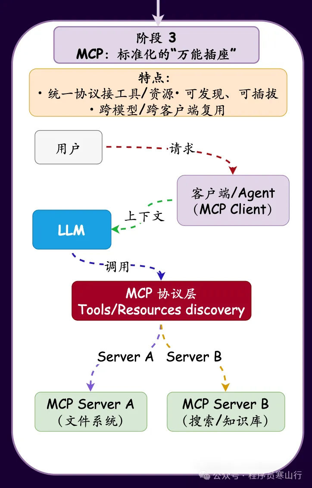
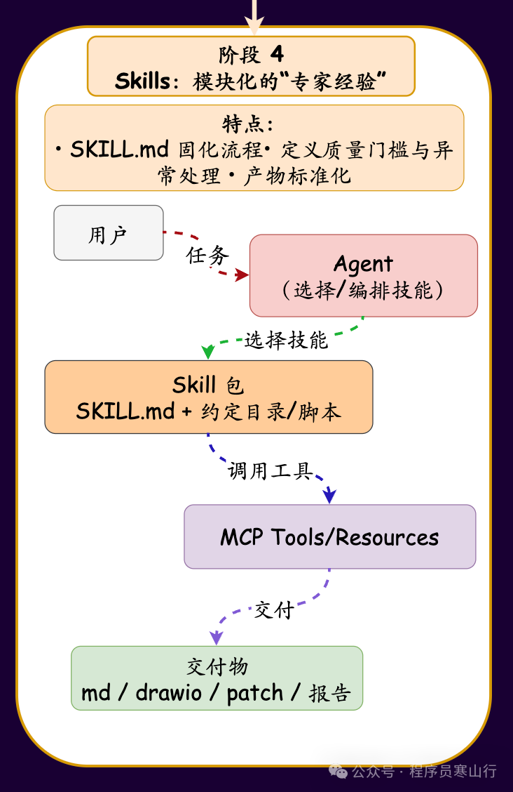
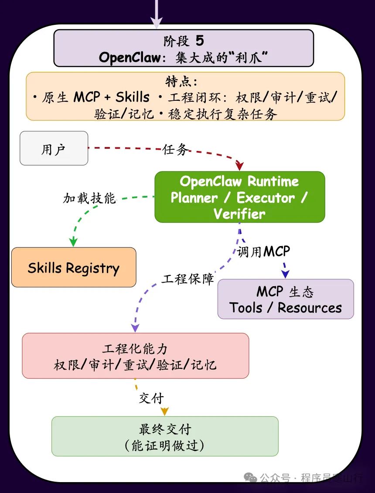

今天给大家完整梳理了从大模型（LLM）初登场到 OpenClaw 最终成型的进化全史。这是一场从“文本生成”向“自主执行”的思维跃迁。
大家好，我是寒山。
一张图给大家讲明白大模型的进化过程，及小龙虾的由来。
第一阶段： LLM 萌芽：博学但无能的“隐士”
大模型刚问世时，像是一个深居简出的隐士。
- 形态： 主要是 Web 端对话框。
- 用法： 纯文本交互。问天、问地、问代码，它能给你完美的答案，但它无法执行任何动作。
- 局限： 模型处于“信息孤岛”，不知道实时新闻，无法修改你的本地文件，也无法帮你发一封真实的邮件。
第二阶段： Function Call：初生的“钥匙”
为了打破孤岛，OpenAI 等厂商推出了 Function Calling（函数调用）。
- 演进： 开发者在代码里“硬编码”一堆 JSON 格式的工具描述。
- 做法： 告诉模型：“如果你要查库存，就输出 get_inventory”。模型开始学会输出结构化指令，再由外部代码执行。
- 痛点： 每个模型的函数格式都不统一，开发者需要为每个模型写海量的“胶水代码”。这时的工具是死板的，且难以跨平台复用。
第三阶段： MCP：标准化的“万能插座”
Anthropic 推出的 MCP 彻底改变了工具连接的逻辑。
- 革命： 它不再让模型适配工具，而是让工具适配协议。只要你写一个“MCP 服务端”，所有的模型（Claude, GPT, 甚至本地模型）都能直接连接。
- 解耦： 就像 USB 接口统一了外设，MCP 统一了模型的“外挂”标准。
- 状态： 这一阶段工具变得极其丰富，但依然存在门槛——普通用户如何快速把这些分散的 MCP 工具整合到一个好用的 Agent 里？

第四阶段： Skills：模块化的“专家级经验”
在 MCP 的基础上，Skills（技能） 的概念开始盛行。
- 定义： Skill 不仅仅是一个 API 接口，它是一套封装好的、带指令的模块化能力包。
- 核心： 每个 Skill 通常包含一个 SKILL.md 文件，里面定义了什么时候用这个工具、具体的执行步骤以及处理异常的逻辑。
- 深度： 技能让模型拥有了“领域专家”的自觉。比如，“代码审查技能”不仅能查 Bug，还附带了企业的代码规范和最佳实践。

第五阶段： OpenClaw：集大成的“利爪”
OpenClaw（其前身为 Clawdbot 和 Moltbot）在 2025 年底至 2026 年初横空出世。
- 由来： 它的名字代表“Open”（开源平权）和“Claw”（像利爪一样抓取现实世界的资源）。
- 终极整合： OpenClaw 的核心是它的 Skills 系统，它完美融合了前几个阶段的所有成果：
- 原生支持 MCP： 它可以瞬间调用全球开发者分享的数千个 MCP 技能。
- 工程化闭环： 它不仅是给模型“钥匙”，还给模型一个自动执行、错误重试、长记忆管理的“身体”。
- 开源平权： 它让像 DeepSeek 这样的开源模型，通过 OpenClaw 框架，也能稳定地执行原本只有顶尖闭源模型才能胜任的复杂技能。

总结：
从“只会说（LLM）”到“会拿钥匙（Function Call）”，再到“有了万能接口（MCP）”，最后通过 OpenClaw 的 Skills 系统，AI 终于进化成了那个“有手有脚、能干实活”的智能代理。
想试试看吗？ 我们可以聊聊如何通过 OpenClaw 给你的本地模型挂载一个 网页搜索 或 本地文件管理 的 Skill。